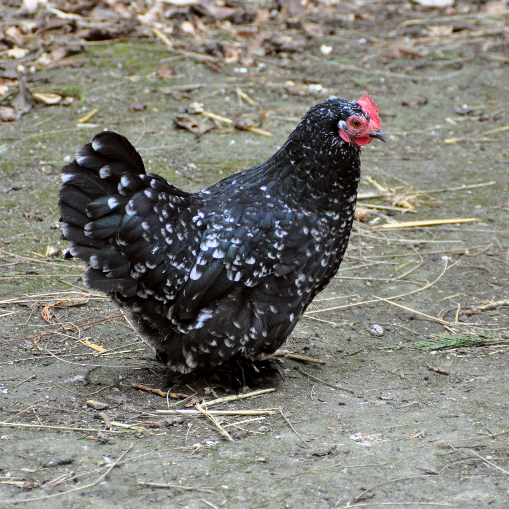

Comment aborder ce machin ? C’est la question que je me pose au moment de commencer cette note. Le Livre des comptes débute de façon un peu claustrophobique : un homme amnésique, solidement enfermé dans une petite pièce confortable, est invité à lire en entier un roman nommé Le Livre des comptes, en échange de quoi il sera libéré. Ça m’a quelque peu inquiété quant aux 690 pages que contient ce beau bébé. Mais détrompons-nous, car il s’agit là d’une espèce de prologue d’une cinquantaine de pages. La suite nous amène à Versailles, où le Président de la République et sa cour (ministres, grands patrons, hauts fonctionnaires…) célèbrent avec faste leur grand-oeuvre consistant à tout faire pour que la moindre parcelle du pays soit consacrée à la seule valeur qui soit : le travail. Alors qu’un grand événement se prépare, un type un peu étrange erre, désoeuvré (scandale !), dans les jardins du château.
J’ai bien envie d’en raconter davantage car il y a largement matière, mais je m’arrête là, car ça ne servirait pas à grand chose. Ce roman est une expérience singulière pleine de mises en abymes, de variations radicales de styles et d’une brutalité absolument réjouissante envers les puissants de ce monde (et en particulier de France). On réalise rapidement que nous sommes dans un univers un peu off : Martin Mongin prend des éléments contemporains, très franco-centrés, très politiques au sens médiatique du terme, et pousse les potards à fond pour en faire quelque chose de bizarre, absurde et fantasmagorique. Pensez “Alain Minc nourrissant des élevages de poulets devins dans les sous-sols de l’Elysée” pour vous faire une idée du truc. De nombreux écrivains d’époques variées y sont convoqués (Jules Verne étant un des plus évidents quant aux aspects science-fictionnesques les plus surannés), mais en ce qui me concerne j’ai parfois pensé à Borges pour la façon dont les aspects fantastiques du récit s’intègrent à la trame générale.
L’auteur semble avoir mis toute sa créativité au service de sa rage : il s’agit de littéralement torturer les avatars de la croyance bornée en une politique toujours plus productiviste et inhumaine. L’hallucination collective autour de “l’IA” n’est pas épargnée, je dirais même que ce que qu’il en a fait est assez prodigieux. Par contre, et c’est un vrai plaisir, il évite avec brio tout verbiage boursouflé (salut à toi, “technococon”) qui viendrait alourdir le texte. Martin Mongin sait très bien d’où il parle et en profite pour tourner au ridicule les prétentions divinatoires de certains pans de la science-fiction (coucou la Red Team). Je ne le connaissais pas, mais j’ai désormais très envie de me tourner vers Francis Rissin et Le Chomor, ses précédents romans.
Sortie : 2025